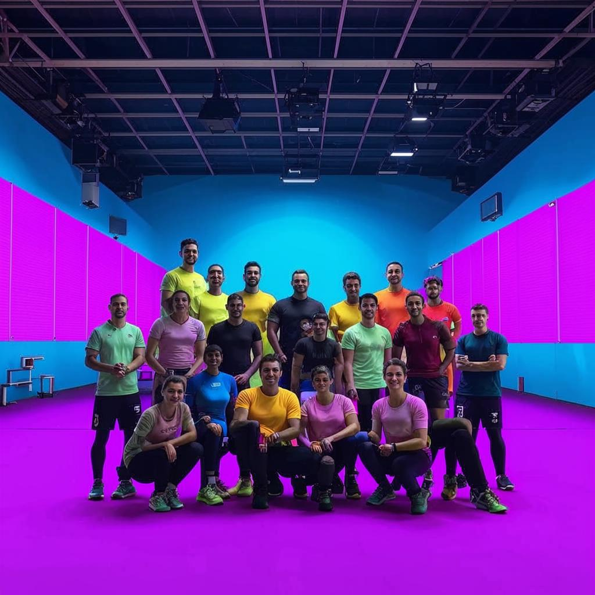

О клубе
Фитнес-клуб "Фитнес Арт" открылся в 2025 году с целью объединить искусство и спорт, создавая уникальное пространство для развития и самовыражения. Основатели клуба мечтали о месте, где физические нагрузки становятся источником вдохновения и творчества. Благодаря этому подходу, "Фитнес Арт" стал популярным среди тех, кто стремится к гармонии души и тела.

Миссия и ценности
Наша миссия — помочь людям обрести красоту и здоровье через творчество и движение. Мы верим, что физическая активность может быть не только полезной, но и эстетически привлекательной. Мы ценим:
- Индивидуальный подход: Каждого клиента мы рассматриваем как уникальную личность с собственными целями и потребностями.
- Качество: Мы используем самое современное оборудование и методы тренировок, чтобы обеспечить максимальный эффект.
- Комфорт: Наша задача — создать обстановку, в которой клиенты чувствуют себя комфортно и уверенно.
- Развитие: Мы поддерживаем стремление к самосовершенствованию и помогаем идти к цели шаг за шагом.
Инфраструктура Fitness Art
"Фитнес Арт" расположен в самом сердце города, что делает его удобным для посещения в любое время суток. Мы гордимся своей современной инфраструктурой:
- Тренажерный зал: Широкий ассортимент оборудования для силовых и кардиотренировок, включая беговые дорожки, велотренажеры, свободные веса и многофункциональные станции.
- Бассейн: Теплая вода и чистота обеспечиваются системой постоянной очистки. Бассейн подходит как для плавания, так и для аквааэробики.
- Сауны: Финская и инфракрасная сауны для релаксации и восстановления после тренировок.
- Зоны для групповых занятий: Просторные студии для йоги, пилатеса, танцев и других групповых программ.
- Кабинеты массажа и косметологии: Комплексные процедуры для ухода за телом и лицом.
- Кафе здорового питания: Легкие закуски, свежие соки и смузи для поддержания энергии и здоровья.
Вернуться на главную
О клубе
Услуги
Тарифы
Контакты